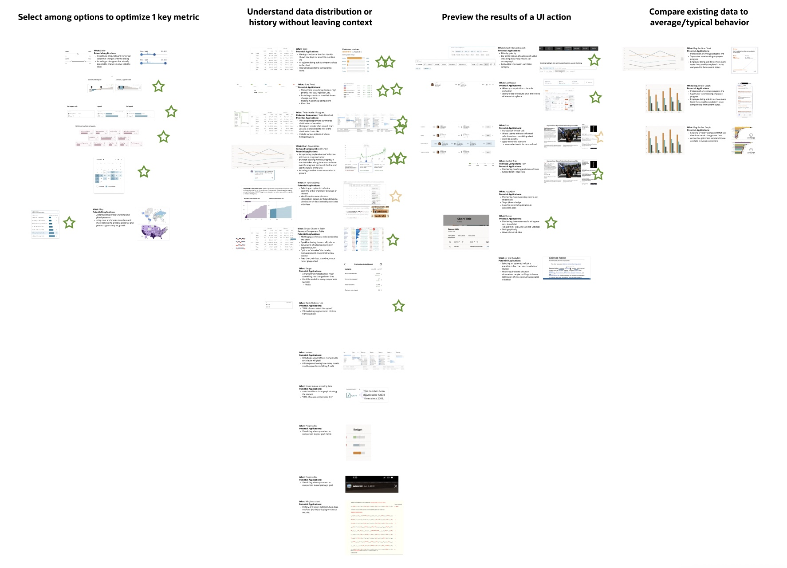
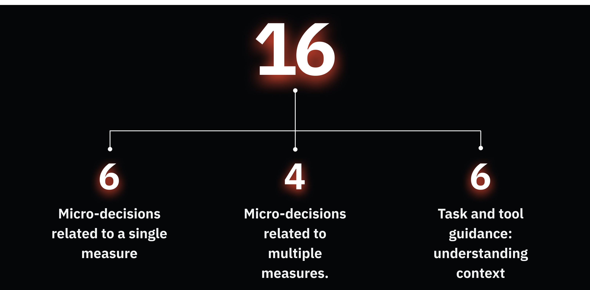

Creating Components for Data-Driven Micro-Decisions
Throughout the workflow of any Oracle employee, they are constantly making small, micro-decisions that can have a significant impact on the overall success of the action. Oracle's design team needed a way to help users make better decisions through analytics-enabled components. During my summer internship, I was tasked with creating components to add to Oracle's analytics tools that allow users to view key metrics at a glance and make informed micro-decisions throughout their workday.
The Challenge
Create components to add to Oracle's analytics tools that allow users to view key metrics at a glance. As opposed to reimagining the user flow, I was encouraged to create components that are inherently more informative. This involved interviewing users, many of which were my colleagues, in order to better understand what moments within their workday could be improved by one additional component.
Key Results
I was able to...
- Lead 15 user research interviews, identifying key pain points and driving changes approved by stakeholders
- Develop 16 new components for Oracle's design system, enhancing usability and data visibility
- Present to the head of Oracle design in order to gain approval for my components and demonstrate their added value to Oracle's design system

Go Broad
We spent weeks looking for inspiration of how data-enabled components encourage users to make smarter decisions every day. We found hundreds of examples ranging from travel booking assistance to Uber visualizing how far away each car is.

Inspiration examples of data-enabled components from various applications
Initial Categories Based on Brainstorm
We then grouped relevant examples by the type of micro-decision it supported. I was careful to ensure that each component was an analytics opportunity.

Grouping widgets by the type of micro-decision they support
1. Select among options to optimize 1 key metric
2. Understand data distribution or history without leaving context
3. Preview the results of a UI Action
4. Compare existing data to average/typical behavior
5. Track aggregate impact of multiple choices on 1 key metric
6. Select among options to optimize multiple key metrics
1. Understanding Data Context
Application users need to understand the shape of data within a working context in order to focus on what matters and avoid unnecessary interactions.
2. Optimizing Small Choices
Business users need to make many small choices that optimize for one or more success criteria.
New Component Ideation
Within these categories, we brainstormed new components to add to Redwood, Oracle's design system. We drew from components found during our research stage to think of where these widgets would be of use in Oracle's products.

FACTORS WE CONSIDERED
How new is the component? Does something similar exist in Redwood?
How broadly useful is the component?
Does analytics increase the value of the component?
Collaborative Evaluation
I outlined each of our component ideas, a relevant example of the concept done well, and the existing Redwood component we would be modifying. I asked each member of the team to put green stars next to concepts they believe should be designed, and yellow stars next to concepts that are good ideas but need a bit of work.
Team feedback board showing component ideas with priority ratings
LOW-FI SKETCHES
After committing to 21 new ideas, I began creating low-fidelity sketches to explore different approaches and gather quick feedback from the team.

Table header histogram sketch

Chart annotations sketch

In-table charts sketch
In-line visualizations sketch
Smart cards sketch
Option optimizer sketch
BREAKDOWN OF DESIGNS
When I began designing high fidelity components and flows, I narrowed the categories to three main groups that address different user needs and decision-making contexts.
Microdecisions: Single Measure
Application users need to understand the effects of small, everyday decisions on a related measure in order to achieve a better business outcome.
How might we...
- Visually show users the relationship of user decisions/actions upon a dependent variable?
- Provide users with more powerful abilities to understand the impacts of their decisions?
- Provide users with valuable context and insights to make more informed decisions?
- Optimize small decisions to improve overall working processes and decision-making?
click to explore
Informed Selection
Smart selection components that display related metrics to help users make informed choices.

Smart Skill Chips
Chip components that show analytics for quick decision-making on skill-related selections.
Informed Dual Slider
Sliders with visual feedback showing the impact of range selections on key metrics.
Smart Radio Buttons
Radio button groups that display associated data to guide user selections.
Date Picker With Selection
Date pickers showing activity metrics to help users choose optimal dates.

Guided Process Gauge
Progress indicators that provide guidance and context throughout multi-step processes.
Microdecisions: Multiple Measures
Application users need to understand the connections between multiple related variables when making small, everyday decisions in order to optimize complex systems for the needed outcome.
How might we...
- Help users to understand the relationships between multiple variables when making decisions?
- Allocate priorities and resources appropriately with respect for multiple dependencies?
- Make informed decisions with interconnected systems to achieve balanced results?
- Prioritize factors to achieve optimal business outcomes?
click to explore
List Header Tab Priority Selection
Interactive table headers that allow sorting by multiple priority metrics simultaneously.
Multiple Measure Impact Tracker
Dashboard component tracking how decisions affect multiple interconnected metrics.
Visual Impact Tracker
Visual representation showing real-time impact across multiple variables.
Cross-Influencing Slider Controls
Sliders that show how adjusting one parameter affects related variables.
Task & Tool Guidance
Application users need to understand the shape of data within a working context in order to focus on what matters and avoid unnecessary interactions.
How might we...
- Communicate data distributions to maximize understanding?
- Provide awareness of broader context without leaving detailed views?
- Streamline user workflows by giving them advance notice of decisions they can choose from?
click to explore
Table Header Histogram
Column headers displaying data distribution to help users understand content at a glance.
Inline Analytics
Contextual analytics embedded directly within workflows for seamless decision-making.
Simple Charts in Table
Micro-visualizations within table cells for quick data comprehension.
Smart Filter and Search
Filters with pre-attentive cues showing data distribution across filter options.
Guided Train
Step-by-step guidance component that adapts based on user context and goals.
Key Learnings
Our goal was to go broad with component creation. I was able to design an incredibly wide array of components with use cases that range from recruiting to healthcare. I gained insight into how to build an intelligent design system that caters towards micro-decisions.


Given More Time...
- Meet with representatives from each of the pillars, share the ideas, and find fits for their use cases
- Continue to develop ideas that give users the support they need to make confident decisions in their work
- Prioritize Redwood components to extend and build out specs
Greatest Takeaway
My greatest takeaway from this experience was learning how to design for enterprise-facing products as opposed to consumer-facing products. Enterprise design requires understanding complex workflows, varied user expertise levels, and the critical importance of consistency at scale.